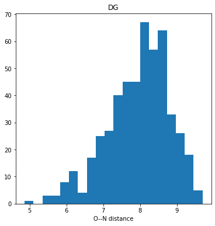
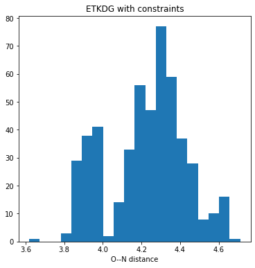

The RDKit’s conformer generator allows you to provide distance “constraints” to bias the conformers which it produces. Last week I wondered how those constraints interact with the terms which the ETKDG algorithm adds to the “distance geometry force field”.
This post uses a simple example to explore that interaction
You appear to be running in JupyterLab (or JavaScript failed to load for some other reason). You need to install the 3dmol extension: jupyter labextension install jupyterlab_3dmol
Compare the distribution we get doing plain DG:
figsize(6,6)ps = rdDistGeom.EmbedParameters()ps.useExpTorsionAnglePrefs =Falseps.useBasicKnowledge =Falseps.randomSeed =0xf00dcids = rdDistGeom.EmbedMultipleConfs(m,500,ps)dists = [rdMolTransforms.GetBondLength(conf,0,8) for conf in m.GetConformers()]hist(dists,bins=20);title('DG');xlabel('O--N distance');

There’s not a giant difference, but it does look like the DG conformers for this molecule tend to be more extended: the O and N tend to be farther away from each other.
Here’s how we can modify the bounds matrix to bring the O and N closer together:
You appear to be running in JupyterLab (or JavaScript failed to load for some other reason). You need to install the 3dmol extension: jupyter labextension install jupyterlab_3dmol
When we do ETKDG we add additional terms to the force field that’s used to optimize the structure. Do these override our distance constraints?
figsize(6,6)ps = rdDistGeom.ETKDGv3()ps.randomSeed =0xf00dps.SetBoundsMat(bounds)cids = rdDistGeom.EmbedMultipleConfs(m,500,ps)dists = [rdMolTransforms.GetBondLength(conf,0,8) for conf in m.GetConformers()]hist(dists,bins=20);title('ETKDG with constraints');xlabel('O--N distance');

Most of the distances are longer than what we were looking for, but they are still considerably shorter than what we saw before:
figsize(9,6)ps = rdDistGeom.ETKDGv3()ps.randomSeed =0xf00dps.SetBoundsMat(bounds)cids = rdDistGeom.EmbedMultipleConfs(m,500,ps)dists = [rdMolTransforms.GetBondLength(conf,0,8) for conf in m.GetConformers()]hist(dists,bins=20,label='constraints');title('ETKDG');hist(dists_etkdg,bins=20,label='no constraints');legend();xlabel('O--N distance');
So that answers our original question: the “constraints” we place on the conformers by modifying the bounds matrix aren’t strict, so the additional terms added by ETKDG can result in them being violated. But the results are still significant biased towards the region of conformer space we wanted to explore.
Let’s try forcing conformations which have distances consistent with an intra-molecular hydrogen bond. Here we need to modify the bounds matrix elements between both the O and the N as well as the O and one of the Hs attached to the N. If we don’t adjust the O-N distance bounds too we end up with a bounds matrix which cannot be smoothed.
You appear to be running in JupyterLab (or JavaScript failed to load for some other reason). You need to install the 3dmol extension: jupyter labextension install jupyterlab_3dmol
Try using ETKDG:
figsize(6,6)ps = rdDistGeom.ETKDGv3()ps.randomSeed =0xf00dps.SetBoundsMat(bounds)cids = rdDistGeom.EmbedMultipleConfs(m,500,ps)dists = [rdMolTransforms.GetBondLength(conf,0,25) for conf in m.GetConformers()]hist(dists,bins=20);title('ETKDG, with constraints');xlabel('O--H-N distance');
You appear to be running in JupyterLab (or JavaScript failed to load for some other reason). You need to install the 3dmol extension: jupyter labextension install jupyterlab_3dmol
The O–H-N distances here aren’t completely obeying the 1.8-1.9 distance bounds we imposed, but they seem to match a bit better than what we saw above when we constrained the O–N distance. I think that’s likely because now we have an additional constraining term - the O–H distance as well as the O–N distance - to help override the ETKDG preferences.
So to repeat the conclusion: modifying the distance bounds matrix doesn’t act as a hard constraint when we include ETKDG terms in the conformer generation process, but it definitely biases the results towards the areas of conformer space which we were trying to access.